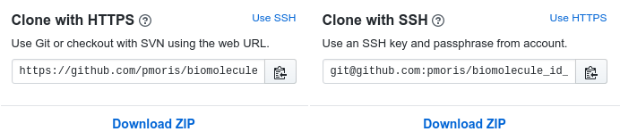
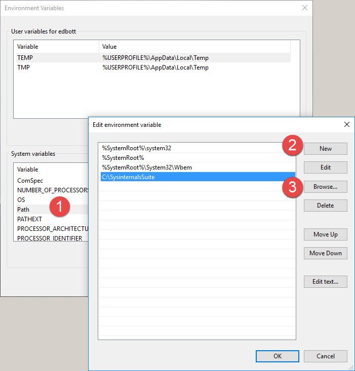
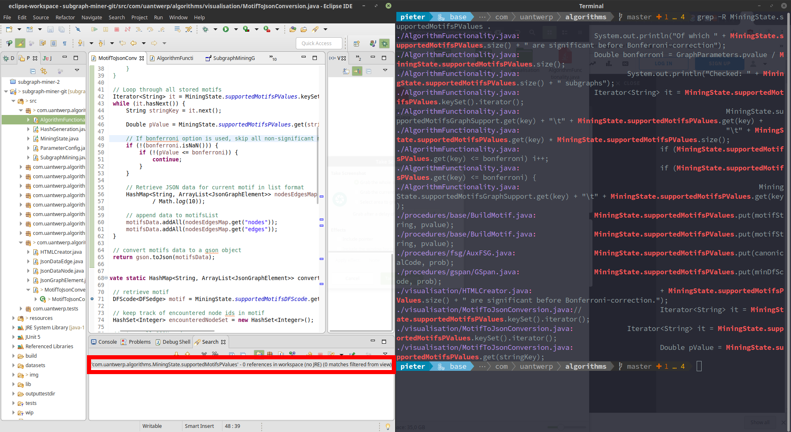

1111 rules for avoiding misery in bioinformatics
or a bunch of stupid things I've done
or an excuse to spout my opinion and act smug
Use version control
Preferably git
Why?

- Safety
- History
- Organization
How?
- My git internals tutorial: https://pmoris.github.io/git-gud
- Various other resources and tutorials are collected in my computational skill set primer.
Beware git GUIs
Use the command line as much as possible for interacting with git and only rely on a GUI for visualisation of history and file diffs.
Reason: GUIs sometimes hide steps, use slightly different naming conventions or try to be smart and automate certain steps, which can cause a lot of confusion, anxiety and/or horror.
Or they just choke completely after a git rebase -i.
Read more in the primer, important aspects include:
- How to generate SSH keys and how to use them in other git-aware tools.
- Use a private commit e-mail address and don't accidentally overwrite it.
git cloneis just a way to download a repository to your computer.
These are not the same!
GitHub recommends HTTPS, but SSH allows you to use your SSH key instead of requiring login credentials for each remote action.
Side note for those that use GitKraken:
- GitKraken account != GitHub account != git username
- Profile overwrites your git e-mail
git config --list
Be careful when using Excel or equivalents
Mistaken Identifiers: Gene name errors can be introduced inadvertently when using Excel in bioinformatics (Zeeberg et al., 2004. https://doi.org/10.1186/1471-2105-5-80)
Gene name errors are widespread in the scientific literature (Ziemann et al., 2016. https://doi.org/10.1186/s13059-016-1044-7)
Other lessons to learn: encapsulate fields ("entry-filled with, separators you use to separate; columns") and mind character encoding (almost always opt for UTF-8).
Similar issues can crop up when importing data into R or pandas dataframes, so be explicit and specify the encoding!
Familiarise yourself with hotkeys and shortcuts ⌨
Seeing other people navigate their computer sometimes triggers a deep silent rage within me.
Notorious examples include:
- Not using tab-completion whenever possible (and mistyping file paths as a consequence).
- Re-typing commands in a terminal instead of using the history (
↑key or history search functionctrl + r). - Using the mouse and GUI buttons to run code in notebooks or IDEs.
Spend 10 minutes now to save many more in the future.
Especially important in your terminal, file manager and IDE or text editor.
Additional examples and resources
- Your terminal has dozens of neat shortcuts, like moving the cursor to the start/end of a line, deleting whole words, etc.
- R and Jupyter notebooks have hotkeys to create cells, switch between cell types, run the current/above/below/all cells
- In RStudio, use
shift + arrows/home/end(or even the mouse) to select lines andctrl + returnto run them. - Use automatic docstring generators. You are writing docstrings, aren't you?
- Decide on a code formatter + linter and use it consistently, most editors have this built-in or provide plug-ins (e.g. VS code +
blackandflake8).
Check out the primer for more resources on this topic.
Be careful when copying code from the web ‚úÇüìã
pieter¬†ÓÇ∞¬†üê笆base¬†ÓÇ∞¬†~¬†ÓÇ∞¬†sudo apt install ‚Äìy cowsay
[sudo] password for pieter:
Reading package lists... Done
Building dependency tree
Reading state information... Done
E: Unable to locate package –y
— (em dash) VS – (en dash) VS - (hyphen ~= hyphen-minus)
¬† pieter¬†ÓÇ∞¬†üê笆base¬†ÓÇ∞¬†~¬†ÓÇ∞¬†echo ‚Äúsomething profound‚Äù
“something profound”
¬†pieter¬†ÓÇ∞¬†üê笆base¬†ÓÇ∞¬†~¬†ÓÇ∞¬†echo "something else"
something else
curly or smart and straight or vertical quotation marks
“ ” VS " "
‘ ’ VS ' '
Terminal tips
- Increase the length of your bash history:
echo "HISTFILESIZE=100000" > ~/.bashrc - Create aliases or save short scripts.
What is the PATH?!‽‽‽
List of directories where the shell searches for executable files.
Windows
Unix
$ echo $PATH
/home/pieter/.nvm/versions/node/v10.5.0/bin:/home/pieter/.rbenv/shims:/home/pieter/.rbenv/bin:/opt/pycharm/bin:/home/pieter/miniconda3/bin:/home/pieter/miniconda3/condabin:/home/pieter/bin:/home/pieter/.local/bin:/usr/local/sbin:/usr/local/bin:/usr/sbin:/usr/bin:/sbin:/bin:/usr/games:/usr/local/games:/usr/lib/jvm/java-10-oracle/bin:/usr/lib/jvm/java-10-oracle/db/bin:/usr/lib/jvm/java-11-openjdk-amd64/bin:/home/pieter/miniconda3/envs/tools/bin
echo 'export PATH="$PATH:/home/pieter/miniconda3/envs/tools/bin"' > .bash_rc
You can use the following commands to find out where a command is located:
$ which python # only works if binary is included in $PATH
/home/pieter/miniconda3/bin/python
 $ conda activate tools
 $ which python
/home/pieter/miniconda3/envs/tools/bin/python
$ whereis python # searches hard-coded paths regardless of $PATH
python: /usr/bin/python3.6 /usr/bin/python3.5 /usr/bin/python3.6m-config /usr/bin/python3.6m /usr/bin/python3.5m /usr/bin/python3.6-config /usr/bin/python2.7 /usr/bin/python /usr/lib/python3.6 /usr/lib/python3.5 /usr/lib/python2.7 /usr/lib/python3.7 /etc/python3.6 /etc/python3.5 /etc/python2.7 /etc/python /usr/local/lib/python3.6 /usr/local/lib/python3.5 /usr/local/lib/python2.7 /usr/include/python3.6 /usr/include/python3.6m /usr/include/python2.7 /usr/share/python /home/pieter/miniconda3/envs/tools/bin/python3.7 /home/pieter/miniconda3/envs/tools/bin/python3.7m /home/pieter/miniconda3/envs/tools/bin/python3.7m-config /home/pieter/miniconda3/envs/tools/bin/python3.7-config /home/pieter/miniconda3/envs/tools/bin/python /usr/share/man/man1/python.1.gz
$ echo alias vpn=openconnect vpn.uantwerpen.be > .bash_aliases
$ type vpn # searches environment including $PATH and aliases (or "command -v")
vpn is aliased to `sudo openconnect vpn.uantwerpen.be'
cf. version managers
Windows Command Prompt and Powershell are not the same as a Unix-shell, although they have their uses.
Install the Windows Subsystem for Linux on W10 https://docs.microsoft.com/en-us/windows/wsl/install-win10, rather than running a virtual machine (for most scenarios).
Caveat: things like Python are not automatically shared between Windows and the Subsystem.
Even GUI apps work if you install an X server!
Can even be linked to your IDE e.g. VS Code: https://medium.com/@janelgbrandon/a-guide-for-using-wsl-for-development-d135670313a6 & https://code.visualstudio.com/docs/remote/wsl as if it's a remote server
For the full write-up, see the primer.
https://askubuntu.com/questions/1051525/windows-subsystem-for-linux-wsl-what-cant-i-do-with-the-ubuntu-application-f
Learn how to exit vim
Press the X button$ killall -9 vim <esc>:wq<enter>Shift-Z-Z
https://stackoverflow.blog/2017/05/23/stack-overflow-helping-one-million-developers-exit-vim/
Learn (at least) a few `Bash` (or `PowerShell`) tools
Grep (and by extension regular expressions
can help when your IDE decides to be an idiot. (image of Eclipse )  counting lines head or tail checking columns editing line-by-line sed low memory editing vimSpend some time on a bash primer
$ rsync --help | grep "-z"
Usage: grep [OPTION]... PATTERN [FILE]...
Try 'grep --help' for more information.
 $ rsync -h | grep "\-z"
-z, --compress compress file data during the transfer
 $ rsync -h | grep '\-z'
-z, --compress compress file data during the transfer
$ rsync --help | grep -- -z
-z, --compress compress file data during the transfer
Things worth your time
- File permissions: https://linuxjourney.com/lesson/file-permissions
- File redirection: https://catonmat.net/bash-one-liners-explained-part-three e.g.
foo >outfile1 2>&1 >outfile2(see SO) - Regular expressions and
grep / sed / awk: https://regexone.com/ - https://mywiki.wooledge.org/BashGuide
- https://mywiki.wooledge.org/BashPitfalls (even just number 1 is useful)
- https://zwischenzugs.com/2018/01/06/ten-things-i-wish-id-known-about-bash/
SSH tips üîë
Use ~/.ssh/config
Host calcua
HostName login-leibniz.uantwerpen.be
#Port 22000
User vsc20380
IdentityFile ~/.ssh/id_rsa
$ ssh calcua
$ rsync -avhzP *.tar.gz calcua:/scratch/antwerpen/203/vsc20380/pmc/
When working on a remote server over SSH (or PuTTY), you can keep jobs alive after disconnecting:
- After already starting a process:
^Zfollowed bybg %1anddisown (-h) %1 nohup bash my_amazing_script.sh > output.log 2>&1 &(cf. redirection)screen/tmux
Process needs to be immune to SIGHUP.
- https://serverfault.com/questions/311593/keeping-a-linux-process-running-after-i-logout
- https://unix.stackexchange.com/questions/3886/difference-between-nohup-disown-and
- https://unix.stackexchange.com/questions/484276/do-disown-h-and-nohup-work-effectively-the-same
- https://unix.stackexchange.com/questions/57166/disown-wont-take-h-option
If you cannot connect to a server using SSH keys (and ssh -vvv is cryptic), check your file permissions.
- .ssh directory: 700 (
drwx------) - public key (.pub file): 644 (
-rw-r--r--) - private key (id_rsa): 600 (
-rw-------) - home directory should not be writeable by the group or others, at most 755 (
drwxr-xr-x)
Windows users: be aware than when you create keys in WSL the keys won't automatically be picked up by other Windows programs (PuTTY, git GUIs, etc.)
When you have more than a few print() statements in your Python code, it's time to use a proper debugger.
import pdb # or import ipdb as pdb
# insert this line where you want a breakpoint
pdb.set_trace()
Or use a solution built into your IDE e.g. PyCharm.
Managing Python

Use conda
- Actually, use
minicondato avoid bloat. - Lives side-by-side your system-wide Python install, but uses an alias to become the default
which python - Use
condaenvironments to keep projects and specific package versions separated and documented cf. version control. - Use
virtualenvwhen deploying code on a remote server or docker container.
Check the documentation for a list of command commands: creating/listing/exporting environments, installing/removing packages, etc. https://docs.conda.io/projects/conda/en/latest/user-guide/getting-started.html
conda and pip are separate things
Use conda install by default.
If a package is missing, check out different channels e.g. conda install --channel forge (bioconda is also nice).
If that fails, first install pip inside the conda environment.
cf. PATH
pip is not installed by default!
$ conda create -n newenv python=3.7
......
 $ which python
/home/pieter/miniconda3/envs/newenv/bin/python
 $ which pip
/home/pieter/miniconda3/envs/newenv/bin/pip
 $ conda create -n newerenv
......
 $ conda activate newerenv
$ which python
/usr/bin/python
$ which pip
/home/pieter/miniconda3/envs/tools/bin/pip # custom PATH append statement inside my .bashrc
Install nb_conda for managing environments inside notebooks
Add nb_conda to whatever environment you want to launch Jupyter notebooks from (I use the base environment).
Install ipykernel / r-irkernel into any environment you want to use inside notebooks.
For ruby use renv.
For node.js use nvm.
Managing
For package management, check out renv and packrat.
Don't install packages via your system package manager, only use install.packages().
conda can also manage R environments, but might not act nicely with R_LIBS (https://waoverholt.com/conda-and-R/)
Don't start scripts with
Use interactive coding notebooks responsibly üìì
Notebooks (Jupyter and R) are great for:
- Exploration
- Prototyping
- Sharing results, visualisation and adding remarks
But notebooks suffer from:
- Hidden states
- Out-of-order execution
- Horrible for sharing code
Use them appropriately, for exploration, not reproducing.
Write functions in separate files or create a local package (see primer).
- Excellent talk by Joel Grus: https://www.youtube.com/watch?v=7jiPeIFXb6U
- Thoughts of the amazing author of
knitr: https://yihui.name/en/2018/09/notebook-war/#summary
As a side note, everyone who uses Jupyter Notebooks should check out its JupyterLab and Binder-like cloud solutions. (https://www.dataschool.io/cloud-services-for-jupyter-notebook/)
,@@@@@@@@@@,,@@@@@@@% .#&@@@&&.,@@@@@@@@@@, %@@@@@@%* ,@@@% .#&@@@&&. *&@@@@&( ,@@@@@@@% %@@@@@, ,@@,
,@@, ,@@, ,@@/ ./. ,@@, %@% ,&@# .&@&@@( .@@/ ./. #@&. .,/ ,@@, %@% *&@&. ,@@,
,@@, ,@@&%%%%. .&@@/, ,@@, %@% ,&@# %@& /@@, .&@@/, (@@&%(*. ,@@&%%%%. %@% &@# ,@@,
,@@, ,@@/,,,, ./#&@@@( ,@@, %@@@@@@%* /@@, #@&. ./#&@@@( *(%&@@&. ,@@/,,,, %@% &@# .&&.
,@@, ,@@, ./, .&@# ,@@, %@% ,@@@@@@@@@% ./. .&@# /*. /@@. ,@@, %@% *&@&. ,,
,@@, ,@@@@@@@% .#&@@@@&/ ,@@, %@% .&@# ,@@/.#&@@@@&/ /%&@@@@. ,@@@@@@@% %@@@@@. ,@@,
,*************,,*/(((((//,,*(#%%%%%%%%%%%%%%%#(*,,,****************************************************,*/(((((((((/((((////****/((##%%%%%%
,*************,,//((((((//,,*(%%%%%%%%%%%%%%%%%##/*****************************************************,,*/(///(//////****//((##%%%%%%%%%%%
,************,,*/(((((((//***/#%%%%%%%%%%%%%%%%%%%#(/***************************************************,*//////////*//((#%%%%%%%%%%%%%%%%%
,***********,,*////////////***/##%%%%%%%%%%%%%%%%%%%##(*,***********************************************,,*////////(###%%%%%%%%%%%%%%%%%%%%
,**********,,,*/*******//////**/(#%%%%%%%%%%%%%%%%%%%%%#(/**********************************************,,,***/(##%%%%%%%%%%%%%%%%%%%%%%%%%
,*********,,,,*************///***/(#%%%%%%%%%%%%%%%%%%%%%%#(/***********************************,****,****/((#%%%%%%%%%%%%%%%%%%%%%%%%%%%%#
,*********,,,***************//****/(##%%%%%%%%%%%%%%%%%%%%%%##//**************//////////////////////((#####%%%%%%%%%%%%%%%%%%%%%%%%%%%%%%#(
,********,,,,***********************/(#%%%%%%%%%%%%%%%%%%%%%%%##################%%%%%%%%%%%%%%%%%%%%%%%%%%%%%%%%%%%%%%%%%%%%%%%%%%%%%%%##(/
,*******,..,***********************,,*/##%%%%%%%%%%%%%%%%%%%%%%%%%%%%%%%%%%%%%%%%%%%%%%%%%%%%%%%%%%%%%%%%%%%%%%%%%%%%%%%%%%%%%%%%%%%###((//
,*******,.,,***********************,,,,*(#%%%%%%%%%%%%%%%%%%%%%%%%%%%%%%%%%%%%%%%%%%%%%%%%%%%%%%%%%%%%%%%%%%%%%%%%%%%%%%%%%%%%%%%%##(//**//
,******,.,,,************************,,,,*/(#%%%%%%%%%%%%%%%%%%%%%%%%%%%%%%%%%%%%%%%%%%%%%%%%%%%%%%%%%%%%%%%%%%%%%%%%%%%%%%%%%%%%#(//*******
,*****,,,,,********,***,,,,,,,,,,,,*,,,,,,*/(######%%%%%%%%%%%%%%%%%%%%%%%%%%%%%%%%%%%%%%%%%%%%%%%%%%%%%%%%%%%%%%%%%%%%%%%%%%##(/**********
,*****,..,*******,,,,,,,,,,,,,,,,,,,,,,*,,,,*///((#%%%%%%%%%%%%%%%%%%%%%%%%%%%%%%%%%%%%%%%%%%%%%%%%%%%%%%%%%%%%%%%%%%%%%%%###(/************
,*****,,,*******,,,,,*,,,,,,,,,,,,,,,,,****,,,*/(#%%%%%%%%%%%%%%%%%%%%%%%%%%%%%%%%%%%%%%%%%%%%%%%%%%%%%%%%%%%%%%%%%#######(//**************
,****,.,,,,,,,,,,,,,,,,,,,,,,,,,,,,,,,,,,**,,,/(%%%%%%%%%%%%%%%%%%%%%%%%%%%%%%%%%%%%%%%%%%%%%%%%%%%%%%%%%%%%%%%%%%%%#((//******************
,***,..,,,,,,,,,,,,,,,,,,,,,,,,,,,,,..,,,,,,,*(#%%%%%%%%%%%%%%%%%%%%%%%%%%%%%%%%%%%%%%%%%%%%%%%%%%%%%%%%%%%%%%%%%%%%%#(/*******************
,**,,.,,,,,,,,,,,,,,,,,,,,,,,,,,.......,,,,,,/#%%%%%%%%%%%%%%%%%%%%%%%%%%%%%%%%%%%%%%%%%%%%%%%%%%#####%%%%%%%%%%%%%%%%#(/******************
,**,..,,,,,,,,,,,,,,,,,,,,,,,,,......,,,*,,,*(#%%%%%%%%##(((/(##%%%%%%%%%%%%%%%%%%%%%%%%%%%%%%##(((/*/((#%%%%%%%%%%%%%%#(/*****************
,*,..,,,,,,,,,,,,,,,,,,,,,,,,,,,.....,,**,,*/#%%%%%%%##((((*,**/#%%%%%%%%%%%%%%%%%%%%%%%%%%%%##((##/,,,*(#%%%%%%%%%%%%%%#(*****************
.*,.,,,**,,,,,,,,,,,,,,,,,,,,,,,,,,*****,,,/(%%%%%%%%#(//(#/,..*/#%%%%%%%%%%%%%%%%%%%%%%%%%%%#(//(#/,..,/(#%%%%%%%%%%%%%%#/*****///////////
.,..,,,,,,,,,,,,,,,,,,,,,,,,,,*,,*******,,,(#%%%%%%%%#(*,,,....,/#%%%%%%%%%%%%%%%%%%%%%%%%%%%#(*,,,....,/(#%%%%%%%%%%%%%%#(*,**////////////
.,..,,,,,,,,,...........,,,,,,*,********,,*(#%%%%%%%%%#(/*,,...,/#%%%%%%%%%%%%%%%%%%%%%%%%%%%%#(/*,,..,*/##%%%%%%%%%%%%%%%#(***////////////
...,,,,,,,................,,*,**********,,/#%%%%%%%%%%%%#((////((#%%%%%%%%%%%%%%%%%%%%%%%%%%%%%%##((///(#%%%%%%%%%%%%%%%%%%(/**////////////
..,,,,,,.................,,,**********,,*(#%%%%%%%%%%%%%%%%%%#%%%%%%%%#((///((#%%%%%%%%%%%%%%%%%%%%%#%%%%%%%%%%%%%%%%%%%%%#/**////////////
.,,,,,,,,.................,,***********,,/(####%%%%%%%%%%%%%%%%%%%%%%%%#(/*,,,*(#%%%%%%%%%%%%%%%%%%%%%%%%%%%%%%%%%%%%%%%%%%#(/*////////////
.,***,,,,,,..............,,,**********,..,***//((##%%%%%%%%%%%%%%%%%%%%%%%##((##%%%%%%%%%%%%%%%%%%%%%%%%%##(((((((((###%%%%%#/**///////////
.*****,,,,,,,,,,,,,,,,,,,*************,..,*******/(#%%%%%%%%%%%%%%%%%%%%%%%%%%%%%%%%%%%%%%%%%%%%%%%%%%%%##///*//////((#%%%%%#(**///////////
.****************/******/***////*****,.,*///////**/#%%%%%%%%%%%%%%%%%%%%%%%%%%%%%%%%%%%%%%%%%%%%%%%%%%%%#(////////////(#%%%%%#/**//////////
.***********************/////*******,..,*//////////(#%%%%%%%%%%%%%%%%%%%%##########%%%%%%%%%%%%%%%%%%%%#(///////////*/(#%%%%%#(***/////////
.************************///********,..,*//////////#%%%%%%%%%%%%%%%%%%#(//*****///(((##%%%%%%%%%%%%%%%%#(///////////**/##%%%%##/***////////
.***********************************,.,,***///////(#%%%%%%%%%%%%%%%%#(/*,,,*//((((////(#%%%%%%%%%%%%%%%#((////////////(#%%%%%%#(*********//
,***********,,,*,,*,,**************,,,*//******//(#%%%%%%%%%%%%%%%%%#(*,,*/(((#####(((((#%%%%%%%%%%%%%%%##///////////(#%%%%%%%%#(***///////
,*************,,**,,,************,,,,,/(##((((####%%%%%%%%%%%%%%%%%%%(/**/(((#((((#((//(#%%%%%%%%%%%%%%%%%#(((((((((##%%%%%%%%%%#/**///////
,******************************,,,,,,,*(#%#%%%%%%%%%%%%%%%%%%%%%%%%%%#(**/((#(#(((#((//(#%%%%%%%%%%%%%%%%%%%%%%%#%#%%%%%%%%%%%%%#(**///////
,*************,**************,****,,,,,/(#%%%%%%%%%%%%%%%%%%%%%%%%%%%%#(/*/((((#((((///(#%%%%%%%%%%%%%%%%%%%%%%%%%%%%%%%%%%%%%%%%(/*///////
,*************************************,*/#%%%%%%%%%%%%%%%%%%%%%%%%%%%%%##(////////////(#%%%%%%%%%%%%%%%%%%%%%%%%%%%%%%%%%%%%%%%%%#/**/////*
,******////****///////////////////////***/#%%%%%%%%%%%%%%%%%%%%%%%%%%%%%%####(((((((###%%%%%%%%%%%%%%%%%%%%%%%%%%%%%%%%%%%%%%%%%%#(********
.,*,****///////////////////////////////***/#%%%%%%%%%%%%%%%%%%%%%%%%%%%%%%%%%%%%%%%%%%%%%%%%%%%%%%%%%%%%%%%%%%%%%%%%%%%%%%%%%%%%%#(/*******
.,,,,*****//////////////////////////*******(#%%%%%%%%%%%%%%%%%%%%%%%%%%%%%%%%%%%%%%%%%%%%%%%%%%%%%%%%%%%%%%%%%%%%%%%%%%%%%%%%%%%%##(*******
.,,,,,,***********/////////////////********/(#%%%%%%%%%%%%%%%%%%%%%%%%%%%%%%%%%%%%%%%%%%%%%%%%%%%%%%%%%%%%%%%%%%%%%%%%%%%%%%%%%%%%%(*******
Try to incorporate unit testing into your workflow.
Even something as simple as an assert statement checking the number of columns after reading a .csv file goes a long way.
For more information, check out this talk aimed specifically at data scientists (as opposed to software engineers): https://www.youtube.com/watch?v=0ysyWk-ox-8
When sharing files between Windows and Unix systems, use the dos2unix / unix2dos command to convert line breaks ("\r\n" <=> "\n").
Structure your projects and your code
Go through Wout's presentations and/or the primer.
Add docstrings to your functions.
Create functions.
Be consistent in code style (cf. use a formatter).
Decide on a sane project directory structure. (e.g. https://drivendata.github.io/cookiecutter-data-science/, https://community.rstudio.com/t/data-science-project-template-for-r/3230, https://www.r-bloggers.com/structuring-r-projects/, https://nicercode.github.io/blog/2013-04-05-projects/)
For all one-off commands, download sources and general meta-data, create READMEs in the relevant directories.
For repeated pipelines, use a workflow manager (Make is fine, but more feature-rich variants exist). (e.g. snakemake and nextflow, discussion here: https://www.biostars.org/p/258436/)
R-specific pointers
- Use (RStudio) projects.
- Never use
setwd()! - Do use the
herepackage and create paths relative to the top level of your project. - Don't preserve your workspace, since previously stored variables can silently mess up your results.
- See: https://www.tidyverse.org/articles/2017/12/workflow-vs-script/ https://stackoverflow.com/questions/53433955/relative-paths-in-r-how-to-avoid-my-computer-being-set-on-fire https://whattheyforgot.org/project-oriented-workflow.html http://plantarum.ca/code/setwd/ https://malco.io/2018/11/05/why-should-i-use-the-here-package/

- pip install -e https://dev.to/codemouse92/dead-simple-python-project-structure-and-imports-38c6 https://towardsdatascience.com/whats-init-for-me-d70a312da583 https://towardsdatascience.com/building-package-for-machine-learning-project-in-python-3fc16f541693 https://realpython.com/absolute-vs-relative-python-imports/ https://chrisyeh96.github.io/2017/08/08/definitive-guide-python-imports.html https://alex.dzyoba.com/blog/python-import/ https://hackernoon.com/pip-install-abra-cadabra-or-python-packages-for-beginners-33a989834975 https://stackoverflow.com/questions/22840671/what-is-the-difference-between-importing-python-sub-modules-from-numpy-matplotl https://stackoverflow.com/questions/16475129/clean-name-space-and-init-py https://stackoverflow.com/questions/13093665/python-import-statement-semantics https://stackoverflow.com/questions/19989179/modules-expose-imported-packages
- Don't preserve your workspace, since previously stored variables can silently mess up your results.